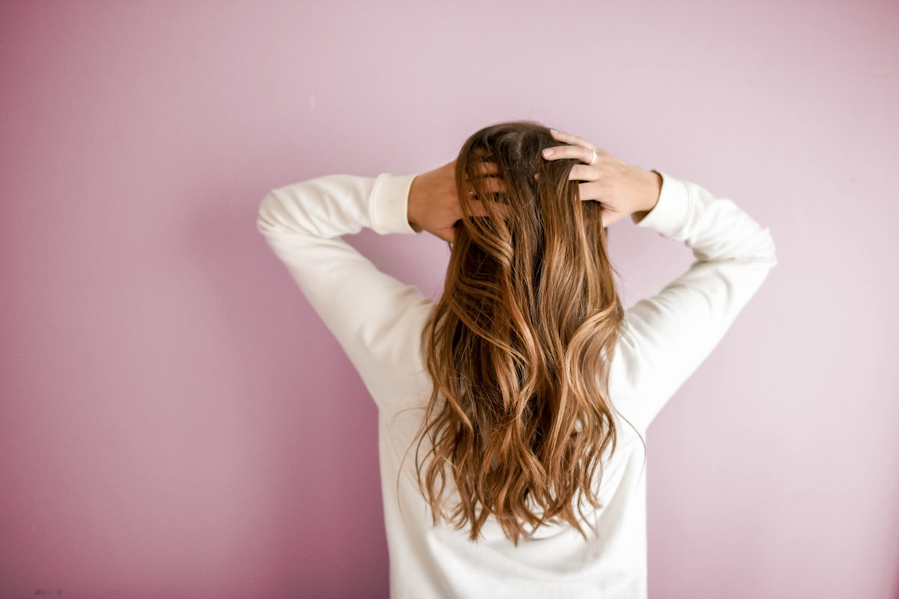
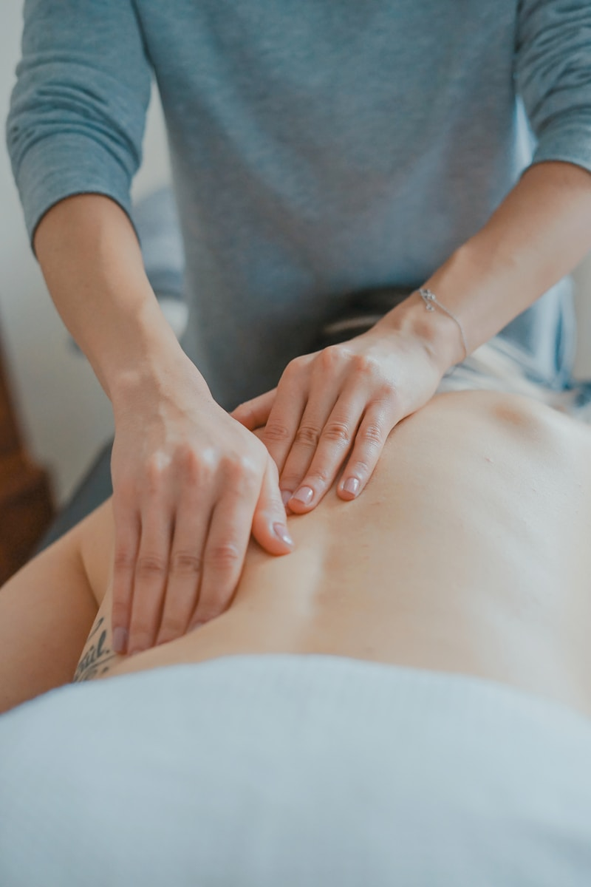
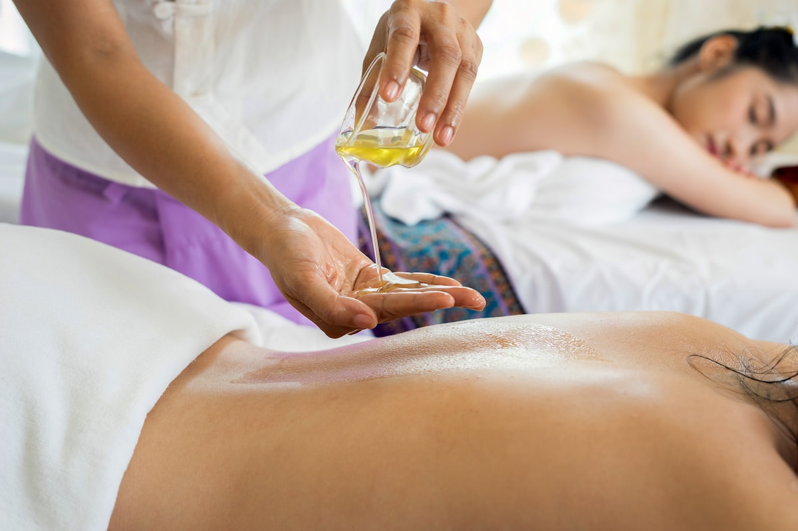
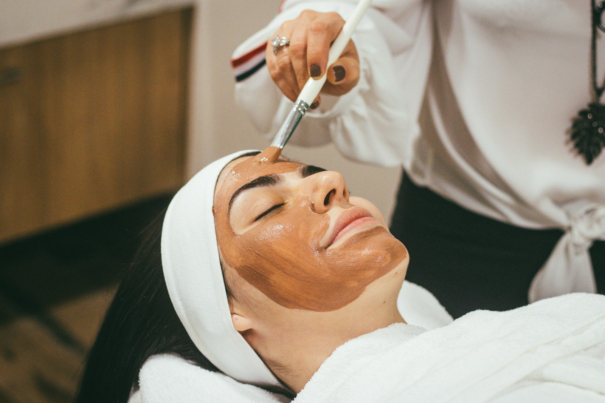
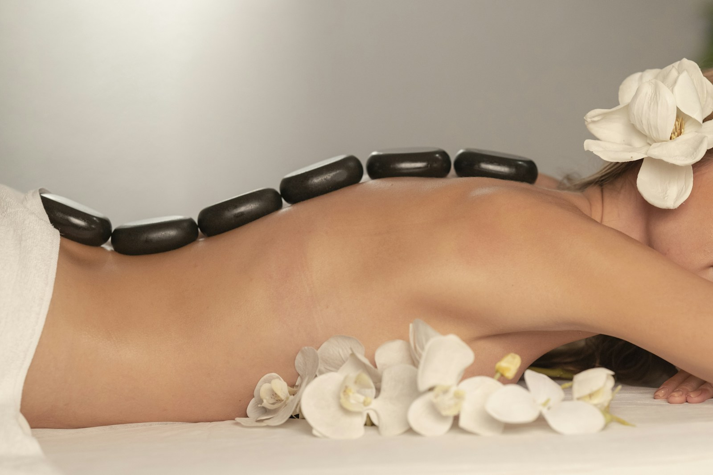
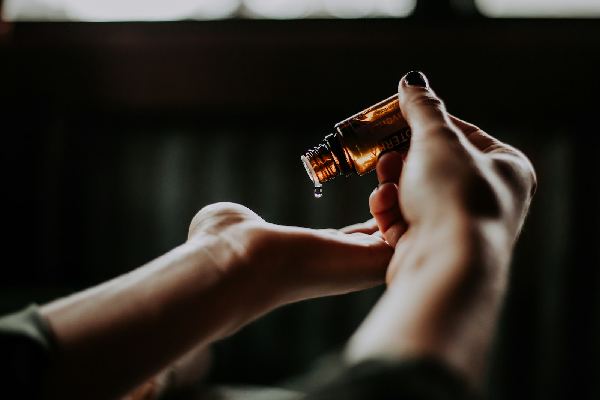
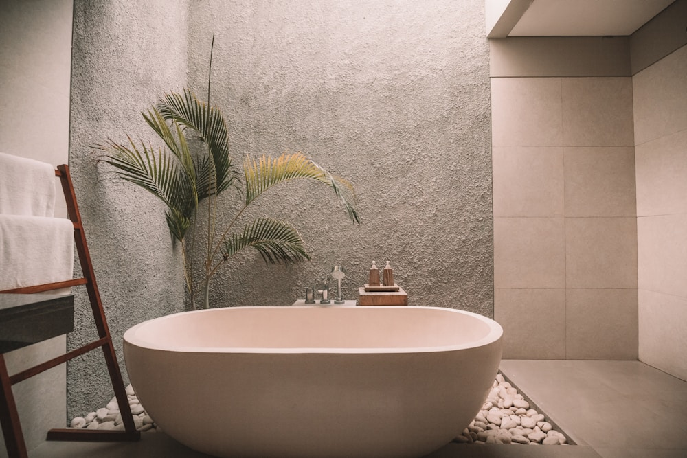
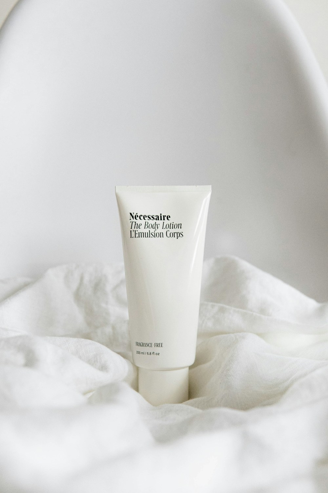

AN INTIMATE BOTANICAL WELLNESS SANCTUARY DEDICATED TO HOLISTIC SKIN REPAIR, THERAPEUTIC TOUCH & TIMELESS CALM.
KALM MOMENTS



DISCOVER PEACE AND CALM FOR YOUR MIND, BODY, AND SOUL AT KALM MOMENTS SANCTUARY
In a city that moves relentlessly, Kalm Moments offers a quiet refuge dedicated to the art of slowing down. Rooted in ancient somatic traditions and modern botanical science, each treatment is crafted to restore your skin's natural vitality and quiet the nervous system.
Our therapists combine intuitive, rhythmic touch with wildcrafted herbal infusions, hand-carved stone tools, and cold-pressed organic extracts. We believe that true rejuvenation begins when you allow yourself to be completely present.
“EVERYONE DESERVES A SPACE TO RECONNECT WITH THEIR INNER PEACE. AT THE HEART OF KALM MOMENTS, WE WEAVE STORIES OF CARE, COMFORT, AND RENEWAL.”
OUR SERVICES
CURATED BOTANICAL RITUALS & RESTORATIVE THERAPIES
FACIAL CARE
[ 01 ]BODY MASSAGE
[ 02 ]FULL PACKAGES
[ 03 ]
FACIAL SCULPT & RELEASE
Targeted myofascial release and lymphatic drainage using hand-carved botanical stones to lift contours and restore skin vitality.

DEEP TENSION RELEASE
Slow, intentional pressure combined with organic herbal compresses to dissolve chronic tension and invite deep somatic rest.

HEAD & SCALP CLARITY
Ancient acupressure points and warm botanical oils to quiet the mind, release cranial pressure, and ground the nervous system.
BOTANICAL PURITY
Formulated exclusively with certified organic, cold-pressed plant extracts, nourishing oils, and wildcrafted herbal botanicals free from synthetic additives.
SOMATIC EXPERTISE
Our therapists hold advanced credentials in myofascial release, lymphatic drainage, and traditional East Asian meridian pressure techniques.
PRIVATE SANCTUARY
Each session takes place in an acoustically isolated, temperature-regulated suite appointed with organic Belgian linen and warm amber light.
WHAT OUR CLIENTS SAY ABOUT US
“An ethereal experience from the moment you step through the doors. The facial sculpting and botanical massage released tension I didn't even know I was holding. Pure tranquility.”
“The gua sha facial redefined my understanding of holistic skincare. My skin looked lifted, rested, and glowing for days without a single invasive step.”
— CLARA M. / SOHO“A true sanctuary in the city. The herbal aromatherapy and the quiet attention to detail created a feeling of deep safety and restorative calm.”
— MARCUS L. / TRIBECA


KALM MOMENTS
WHERE BEAUTY MEETS NATURE · SOHO NEW YORK
142 Mercer Street, 3rd Floor
Soho, New York, NY 10012
Monday – Sunday: 9:00 AM – 8:00 PM
Telephone: +1 (212) 555-0198
Inquiries: concierge@kalmmoments.com
BOOK AN APPOINTMENT
Reserve your personalized facial or massage ritual. We recommend booking two weeks in advance.